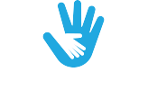

INITIATIVES

CHILD PROTECTION AND INCLUSION
Every child has the right to grow up in a safe and inclusive environment. UNICEF works with partners around the world to promote policies and expand access to services that protect all children.
EDUCATION
Every child has the right to learn. UNICEF works around the world to support quality learning for every girl and boy, especially those in greatest danger of being left behind.